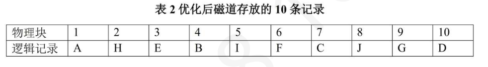
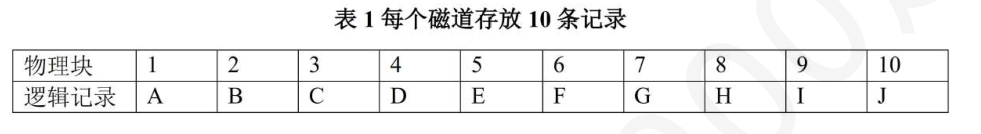
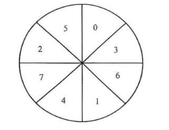
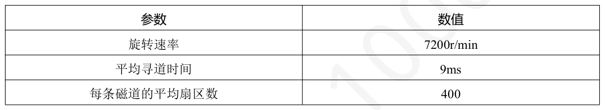

第 31 题
SPOOLing 技术属于（ ）。
A． 用户层I/O 软件 B． 设备独立软件 C． 设备驱动程序 D． 中断处理程序 答案与解析 答案：B
SPOOLing技术是一种设备无关的输入输出缓冲与调度机制，用于实现设备共享和任务排队。注意：用户层只是调用I/O 接口，不负责SPOOLing 调度，所以不是用户层I/O 软件。驱动程序面向具体硬件设备，SPOOLing 与设备无关，所以也不是驱动程序，更不可能是中断处理程序。因此本题选B。
教材第 174 页 第 32 题
若某系统采用了SPOOLing 技术，则用户进程打印的数据首先被传送到（ ）
A． 输出井 B． 输入井 C． 内存 D． 外部设备 答案与解析 答案：A
采用SPOOLing技术的系统会在磁盘中开辟两块区域，分别是输入井和输出井，输入井负责暂存输入数据，输出井负责暂存输出数据。当用户进程的打印内容已经准备完毕，首先送到输出井中，在打印机空闲时再进行输出，故本题选A。
教材第 174 页 第 33 题
下列关于SPOOLing 技术的叙述中，正确的有（ ）
A． Ⅰ、Ⅲ B． Ⅱ、Ⅳ C． Ⅰ、Ⅱ、Ⅲ D． Ⅱ、Ⅲ、Ⅳ 答案与解析 答案：B
Ⅱ、Ⅳ正确。 Ⅰ错误，SPOOLing 技术实际上是用空间换时间。它通过在磁盘上开辟输入井和输出井（即占用磁盘空间）来暂存数据，使得用户程序不必直接等待慢速的I/O 设备，从而节省了CPU 等待时间，提高了整体效率。 Ⅱ正确，这是SPOOLing技术的一个主要优点。例如，打印机是典型的独占设备，但通过SPOOLing 技术，多个用户程序可以将打印任务输出到磁盘上的输出井中，由输出进程依次将这些任务送到打印机打印。在用户看来，打印机就像是被多个进程共享了一样。 Ⅲ错误，SPOOLing 技术的目的之一就是避免用户程序直接等待慢速外设。对于输入操作，输入进程会将数据从输入设备预先读入磁盘上的输入井中。当用户程序需要输入数据时，它是从高速的输入井中获取数据，而不是直接等待输入设备。如果输入井中暂时没有数据，用户程序可能会阻塞等待输入井中的数据，但并非直接等待外设变为空闲。 Ⅳ正确，用户程序执行输出操作时，实际上是将数据输出到磁盘上的输出井中。这个操作相对于直接输出到慢速设备（如打印机）是非常快速的。数据存入输出井后，用户程序可以继续执行其他任务，而不必等待输出设备实际完成打印。专门的输出进程会在输出设备空闲时，从输出井中取出数据进行实际的输出操作。
教材第 174 页 第 34 题
下列关于虚拟设备的说法中，正确的是（ ）
A． 虚拟设备是指允许用户以统一的接口使用物理设备 B． 虚拟设备是指允许用户使用比系统具有的物理设备更多的设备虚拟设备 C． 是指把一个物理设备变换为多个对应的逻辑设备 D． 虚拟设备是指允许用户程序部分装入内存即可使用系统中的设备 答案与解析 答案：C
虚拟设备技术是一种将独占设备改造为共享设备的技术，可将一台物理I/O 设备虚拟为多台逻辑I/O 设备，从而增加设备利用率。故本题选C。
教材第 174 页 第 35 题
下面不属于设备驱动程序的功能的是（ ）
A． 访问I/O 端口，向外部设备发送读写命令 B． 提供上层系统所需的I/O 设备操作接口，隐藏具体的操作细节 C． 查询设备状态并返回给上层系统 D． 为I/O 设备提供缓冲区，加速I/O 答案与解析 答案：D
缓冲区属于设备独立性软件层的功能，不属于设备驱动层的功能，因此选D。设备驱动程序的功能便是代替上层系统对I/O 端口进行实际的访问，并封装其具体细节，对上层系统提供统一的接口。A、B、C 都是这一工作的具体体现。设备驱动的功能有：①接收由与设备无关的软件发来的命令和参数，并将命令中的抽象I/O 要求转化为与设备相关的底层操作序列。②检查用户I/O 操作的合法性（比如试图从打印机读入数据），了解I/O 设备的状态（包括设备状态、数据校验、格式错误信息等），传递与I/O 设备操作有关的参数，设置I/O 设备的工作方式（中断方式或DMA 方式等）③发出I/O 命令，如果I/O 设备空闲，则启动设备，如果忙碌，就将请求者的请求挂在I/O 设备队列上等待。④及时响应中由设备控制器发来的中断请求，并根据中断类型，调用响应的中断服务程序进行处理。
教材第 175 页 第 36 题
设备驱动程序包括（ ） I．驱动程序的注册和注销代码II．初始化设备和释放设备的代码III．设备的读写操作代码IV．与设备I/O 方式相关的代码
A． I、II、III B． I、III、IV C． II、III、IV D． I、II、III、IV 答案与解析 答案：D
以上都属于设备驱动程序的内容，注意与上题驱动程序实现的功能搭配理解，需要记住的是“跟硬件直接交互的是驱动程序”。
教材第 175 页 第 37 题
主机A 上的应用1 给局域网内的主机B 上的应用2 发送信息，下面过程中需要使用设备驱动程序的步骤是（）
A． 将TCP 报文封装成IP 数据报 B． 操作系统接收用户想要发送的信息和TCP 目标端口信息 C． 将需要发送的信息送入网卡并最终控制网卡发送数据帧 D． 组装TCP 报文 答案与解析 答案：C
应用层和传输层对应进程，TCP报文的封装是在内存中进行的，不涉及设备驱动。主机内的网络层是操作系统管理的，IP 数据报位于内核空间内，数据经过处理后从用户进程空间进入操作系统的内核空间也不需要设备驱动程序。网卡属于I/O 设备，向网卡写入数据以及控制网卡发送均需要直接访问I/O 设备，因此需要设备驱动程序参与答案选C。
教材第 175 页 第 38 题
关于进程A 执行“scanf 函数”的说法正确的是（ ）
A． 唤醒进程A 由对应的系统调用服务例程完成 B． 将数据从寄存器送往内核缓冲区由系统调用服务程序完成 C． 将数据从内核缓冲区送往用户缓冲区由中断服务程序完成 D． 初始化键盘设备的代码在驱动程序中 答案与解析 答案：D
A 选项错误，唤醒进程A 由中断服务程序完成。阻塞A 由对应的系统调用服务例程（如read）完成。B、C 选项错误，将数据从寄存器送往内核缓冲区由中断服务程序完成，将数据从内核缓冲区送往用户缓冲区由系统调用服务程序（如read）在唤醒后完成。D 选项正确，这是驱动程序的功能之一。整个流程如下图所示：
教材第 175 页 第 39 题
下列关于磁盘的说法中正确的有（ ）
A． 仅Ⅱ B． Ⅰ、Ⅱ C． Ⅰ、Ⅱ、Ⅲ D． 全部错误 答案与解析 答案：D
Ⅰ错误，磁盘的物理地址通常由柱面号（磁道号）—盘面号（磁头号）—扇区号构成。一个柱面包含所有盘面上相同编号的磁道。磁道是盘面上的同心圆，而不是柱面内再划分磁道。 Ⅱ错误，磁盘驱动器是磁盘本身，而磁盘控制器才是IO 接口Ⅲ错误，对磁盘进行分区是在磁盘物理格式化（低级格式化）之后、高级格式化（逻辑格式化）之前进行的操作。磁盘逻辑格式化主要是在已有的分区上建立文件系统，例如写入引导块、初始化超级块、建立空闲空间管理数据结构和根目录等。
教材第 175 页 第 40 题
磁盘在正式使用前需要经过格式化处理。下列关于这格式化操作及其作用的叙述中，错误的是 （）
A． 低级格式化负责将磁盘的每个盘面划分成若干磁道，再将每个磁道划分成若干扇区，并为每个扇区设置标识信息和校验码。 B． 高级格式化主要是在磁盘分区上建立文件系统的特定数据结构，如引导块、超级块、空闲空间管理信息和根目录等。 C． 低级格式化通常由磁盘制造商在磁盘出厂前完成，用户一般无法自行执行；而高级格式化则由操作系统或用户在安装操作系统或准备新分区时执行。 D． 为了应对坏块，低级格式化时会留出部分扇区备用，操作系统可以选择这些备用的扇区来替换坏块。 答案与解析 答案：D
D 错误，磁盘有移动部件且容错能力弱，因此容易导致一个或多个扇区损坏。部分磁盘甚至在出厂时就有坏块。对于复杂的磁盘，控制器维护磁盘内的坏块列表。这个列表在出厂低级格式化时就已初始化，并在磁盘的使用过程中不断更新。低级格式化将一些块保留作为备用，操作系统看不到这些块，即这些块对操作系统是透明的。控制器可以采用备用块来逻辑地替代坏块，这种方案称为扇区备用。
教材第 175 页 第 41 题
以下关于格式化的描述中，正确的是（ ）。
A． 低级格式化会将磁盘分成多个逻辑分区 B． 低级格式化后，磁盘可以直接存储数据 C． 高级格式化可以被用户随时执行，而不会破坏数据 D． 高级格式化会为指定分区分配文件系统，并初始化其元数据结构 答案与解析 答案：D
A 选项中，将磁盘分成多个逻辑分区的操作称为分区，不属于低级格式化； B 选项中，低级格式化后的磁盘没有文件系统，需要经过分区和高级格式化才能存储数据； C 选项中高级格式化会破坏原分区中的数据； D 选项正确。
教材第 176 页 第 42 题
在磁盘的物理格式化阶段所执行的操作是（ ）
A． 建立文件系统根目录 B． 初始化磁盘空闲空间管理的数据结构 C． 建立管理已分配空间的数据结构 D． 初始化扇区的数据结构 答案与解析 答案：D
一个新的磁盘是只含有磁性记录材料的空白盘，为了使该磁盘能够存储数据，需要对其进行物理格式化，初始化扇区的数据结构，D 正确;物理格式化之后，要进行逻辑格式化，在这个过程中，为磁盘建立文件系统根目录，初始化磁盘空闲空间管理的数据结构，建立管理已分配空间的数据结构，A、B、C 属于磁盘逻辑格式化阶段执行的操作，故本题选D。
教材第 176 页 第 43 题
下列哪些操作不是在磁盘逻辑格式化时做的（ ）
A． 设置inode 表 B． 设置根目录 C． 文件系统挂载 D． 设置超级块 答案与解析 答案：C
：挂载是指将一个文件系统与操作系统的目录树进行关联，这通常在以下情况下进行： • 在系统启动过程中，操作系统会挂载根文件系统和其他必要的文件系统。当插入可移动存储设备（如U 盘）时，系统会挂载该设备的文件系统到指定的挂载点（通常是 • 一个空文件夹）。因此，挂载操作是将格式化好的文件系统与操作系统的目录树进行关联，使得文件系统可以被操作系统访问。这是一个在系统启动之后或设备插入时进行的操作，而不是在逻辑格式化时进行的操作。
教材第 176 页 第 44 题
文件系统的根目录创建者为为（ ）
A． 磁盘分区程序 B． 磁盘逻辑格式化程序 C． 操作系统初始化程序 D． 用户程序 答案与解析 答案：B
文件系统的根目录创建是逻辑格式化过程中实现的。
教材第 176 页 第 45 题
下列算法中能随时改变磁头的运动方向的是（ ）。
A． Ⅰ、Ⅱ B． Ⅰ、Ⅲ C． Ⅱ、Ⅳ D． Ⅰ、Ⅱ、Ⅲ 答案与解析 答案：B
SSTF算法优先响应距离当前磁头最近的访问请求，FCFS算法则根据磁盘请求的先后顺序进行调度，在这两种算法中，磁头可以随时改变运动方向；SCAN 算法和CSCAN算法固定了磁头移动方向，在这两种算法中，不能随时改变。综上所述，选B。
教材第 176 页 第 46 题
下列关于磁盘调度的说法中，正确的有（ ）
A． 仅Ⅰ B． 仅Ⅰ、Ⅱ C． 仅Ⅰ、Ⅲ D． Ⅰ、Ⅱ、Ⅲ 答案与解析 答案：C
Ⅰ正确，磁盘访问时间主要由三部分组成：寻道时间（Ts）、旋转延迟时间（Tτ）和传输时间（Tt）。在大多数情况下，特别是对于机械硬盘，寻道时间（磁头移动到目标磁道所需的时间）通常是这三者中最大的。 Ⅱ错误，磁臂粘着（armstickiness）现象是指磁头长时间停留在某个磁道附近，响应对该磁道或附近磁道的密集访问请求，而导致对其他较远磁道的访问请求长时间得不到服务。先来先服务（FCFS）算法是按照请求到达的先后顺序进行处理，它不会因为某个磁道有高频率访问就一直停留在那里，而是会依次处理队列中的所有请求，因此它不会导致磁臂粘着。 Ⅲ正确，Flash半导体存储器的物理结构不需要考虑寻道时间和旋转延迟，可直接按I/O请求的先后顺序服务。
教材第 176 页 第 47 题
某磁盘共200 个磁道，编号从0 到199。现有一个磁盘请求序列为：142，82，197，90，108，当前磁头的位置为100，正在向磁道号增加的方向移动。则按照最短寻道时间优先算法（SSTF）和改进后的SCAN 扫描算法（LOOK），处理完以上请求后，磁头扫过的磁道数分别为（ ）。
A． 149，212 B． 149，216 C． 342，212 D． 342，216 答案与解析 答案：A
采用SSTF算法时，访问序列为108，90，82，142，197，故扫过的磁道数为8+18+8+60+55=149；采用改进的SCAN 算法时，访问序列为108，142，197，90，82，故扫过的磁道数为8+34+55+107+8=212，因此选A。
教材第 176 页 第 48 题
假定某磁盘有1000 个柱面，编号从0 到999，当前磁头正在734 处，若请求队列的先后顺序是：164，845，911，165，788，432，396，700，25。用SCAN 算法（初始时磁头向磁道号增加的方向移动）和SSTF 算法完成上述请求，磁臂分别需要移动的柱面数是（ ）。
A． 1865，1543 B． 1688，1738 C． 1239，1131 D． 1239，1738 答案与解析 答案：C
采用SCAN 算法时，依次访问的磁道是788，845，911，999，700，432，396， 165，164.25，磁臂一共移动了(999-734)+(999-25)= 1239个磁道，对应1239个柱面;采用SSTI算法时，依次访问的磁道是700，788，845，911，432，396，165，164，25，磁臂一共移动了(734- 700)+(911-700)+ (911-25)=1131个磁道，对应1131个柱面，故本题选C。
教材第 176 页 第 49 题
假设磁头当前处于90 号磁道，磁头正向磁道号增大的方向移动，磁道号从0 到99。现有一个磁盘读写请求队列：92，85，78，24，47，26，65，51。若采用CSCAN 算法依次响应请求，磁头总共需要移动的磁道数是（）。
A． 24 B． 135 C． 280 D． 193 答案与解析 答案：D
题干要求采用CSCAN 算法，磁头沿磁道号增大的方向移动，期间依次对访问请求进行响应，然后返回首端，重新开始扫描。因此磁头依次访问的磁道是92，99，0，24，26，47， 5165，78，85，共移动了(99-90)+(99-0)+(85-0)= 193个磁道，故本题选D。
教材第 177 页 第 50 题
已知磁道号从0 到99，假设当前磁头位置为78 号磁道，且正向磁道号增大的方向移动。现有一个磁盘读写请求队列为：65，34，24，89，86，53，74，98。若采用CLOOK 算法依次响应这些请求，则平均移动的磁道数是
A． 16 B． 17 C． 18 D． 19 答案与解析 答案：C
题干要求采用CLOCK 算法，磁头沿磁道号增大的方向移动，期间依次对访问请求进行响应，然后返回首端，重新开始扫描，CLOOK 算法不需要移动到磁道的两端即可返回。在这个过程中，磁头依次访问的磁道是86，89，98，24，34，53，65，74，共移动了(98-78)+(98-24)+(74- 24)=144个磁道，平均移动的磁道数为144/8=18，故本题选C。
教材第 177 页 第 51 题
信息在外存空间中的排列也会影响存取等待时间。考虑几条逻辑记录A，B，C，…，J，它们被存放于磁盘上，每个磁道存放10 条记录，安排如表1 所示。假定要经常顺序处理这些记录，磁道旋转速度为20ms/转，处理程序读出每条记录后花4ms 进行处理。考虑对信息的分布进行优化，如表2 所示。相比之前的信息分布，优化后的时间缩短了（ ）。


A． 60ms B． 104ms C． 144ms D． 204ms 答案与解析 答案：C
磁盘旋转速度为20ms/转，每个磁道存放10 条记录，故读出一条记录的时间为20ms/10=2ms。 • 对于第一种记录分布的情况，读出并处理记录A 需要6ms，此时读/写磁头已转到记录D 的开始处，因此为了读出记录B，必须再转一圈少两条记录(从记录D 到记录B)。后续8 条记录的读取及处理与此相同，但最后一条记录的读取与处理只需6ms。于是，处理10 条记录的总时间为9x(2+4+16)ms+(2+4)ms=204ms。 •对于第二种记录分布的情况，读出并处理记录A 后，读/写磁头刚好转到记录B 的开始处，因此立即就可读出并处理，后续记录的读取与处理的情况相同，共选择2.7 圈。最后一条记录的读取与处理只需6ms。于是，处理10 条记录的总时间为20msx2.7+6ms=60ms。综上，信息分布优化后，处理时间缩短了204ms-60ms=144ms。
教材第 177 页 第 52 题
某磁盘组共有80 个柱面，每个柱面有12 条磁道，每条磁道划分为16 个扇区，现有一个8000条逻辑记录的文件，逻辑记录的大小与扇区大小相等，该文件按顺序结构存放在磁盘组上，柱面、磁道、扇区均从0 开始编址，逻辑记录的编号从0 开始，文件数据从0 号柱面、0 号磁道、0 号扇区开始存放，则该文件的5687 号逻辑记录应存放在（ ）。
A． 29 号柱面，7 号磁道，6 号扇区 B． 30 号柱面，8 号磁道，7 号扇区 C． 29 号柱面，7 号磁道，7 号扇区 D． 28 号柱面，7 号磁道，7 号扇区 答案与解析 答案：C
每个柱面有12 条磁道，每条磁道有16 个扇区，因此一个柱面上有192个扇区。5687/192=29 余119，因此柱面号为29；119/16=7 余7，因此磁道号为7、区号为7。
教材第 177 页 第 53 题
磁头当前位于第100 道，正向磁道序号增加的方向移动。现有一个磁道访问请求序列55，58， 39，18，90，160，150，38，184，则采用SCAN 算法得到的磁道访问序列是（ ）。
A． 55，58，39，18，90，160，150，38，184 B． 90，58，55，39，38，18，150，160，184 C． 150，160，184，90，58，55，39，38，18 D． 150，160，184，18，38，39，55，58，90 答案与解析 答案：C
向磁道序号增加的方向移动，首先排除选项A、B；选项D 是到达端点后先回到最小值，不扫描磁道，再往磁道号增大的方向移动；SCAN算法是到达端点后往当前方向相反的方向扫描；选项C 符合SCAN算法的定义，故选择选项C。
教材第 177 页 第 54 题
提前读和延迟写是有效提高磁盘I/O 速度的两种方法。在下列关于提前读和延迟写的说法中，错误的是（）。
A． 若用户对文件进行访问时采用的是随机访问方式，则不存在提前读 B． 提前读是通过减少磁盘I/O 次数来等价地提高磁盘I/O 速度的 C． 若用户对文件进行写操作时采用的是随机访问方式，则不存在延迟写 D． 延迟写是通过在内存中设置一个空闲缓冲区队列来实现的 答案与解析 答案：C
提前读是指用户对文件进行访问时，经常采用顺序访问方式，在读当前块的同时，可将下个盘块也提前读入缓冲区，这样，当下次要读该盘块时，便可直接从缓冲区中取得下一盘块的数据，而无须再启动磁盘I/O，因此选项A、B正确。延迟写是指在缓冲区中的数据本应立即写回磁盘，但考虑到该缓冲区中的数据在不久后可能会再次被本进程或其他进程访问(共享资源)，因此并不立即写回磁盘，而挂在空闲缓冲区队列的末尾，此时，任何访问该数据的进程都可直接读出其中的数据而不必启动磁盘I/O，这样，又可进一步减小等效的磁盘I/O 时间。由此可知，延迟写和随机访问方式之间并没有必然的联系，选项C 错误。当缓冲区中的数据延迟到必须往磁盘上写时(如缓冲区满)，才进行写磁盘操作。
教材第 177 页 第 55 题
一个交叉存放信息的磁盘，信息存放方式如图所示。每个磁道有8 个扇区，每个扇区为512B，旋转速度为3000r/min。假定磁头已在读取信息的磁道上，0 扇区转到磁头下需要1/2 转，且设备对应的控制器不能同时进行输入/输出，在数据从控制器传送至内存的这段时间内，从磁头下通过的扇区数为2. 问依次读取一个磁道上所有扇区的数据到内存的平均传输速度为（）。

A． 57.1KB/s B． 67.1KB/s C． 77.1KB/s D． 87.1KB/s 答案与解析 答案：A
在数据从控制器传送至内存的这段时间内，从磁头下通过的扇区数为2。当数据从控制器传送至内存后，磁头开始读数据时，刚好转到目标扇区。所以总时间为总时间=初始寻找0 扇区时间+读扇区总时间+将扇区数据送入内存总时间由题中条件可知，旋转速度为3000r/min=50r/s ，即20ms/r 。读一个扇区需要的时间为： 20/8ms=2.5ms读一个扇区并将扇区数据送入内存需要的时间为：2.5X3ms=7.5ms读出一个磁道上的所有扇区需要的时间为：20/2ms+8x7.5ms=70ms=0.07s每磁道数据量为：8x512B=4KB，数据传输速度为：4KB/0.07s=57.1KB/S所以依次读出一个磁道上的所有扇区需要0.07s，其数据传输速度为57.1KB/S。
教材第 178 页 第 56 题
考虑一个有如下参数的磁盘：估计访问一个磁盘扇区的平均访问时间为（）

A． 4ms B． 8ms C． 13ms D． 17ms 答案与解析 答案：C
平均访问时间=平均寻道时间+旋转时间+传送时间平均寻道时间=9ms旋转时间=1/2x（60x1000ms/7200r）≈4ms传输时间=1/400x（60x1000ms/7200r）≈0.02ms平均访问时间=9+4+0.02≈13ms
教材第 178 页 第 57 题
下列方法中能改善磁盘系统的可靠性的是（ ）
A． Ⅰ、Ⅱ B． Ⅱ、Ⅳ C． Ⅰ、Ⅱ、Ⅳ D． Ⅰ、Ⅱ、Ⅲ、Ⅳ 答案与解析 答案：C
磁盘高速缓存根据局部性原理，将磁盘上的一些常用数据块暂时保存在随机存储器(RAM)中，使得对磁盘的访问可以转化为对随机存储器的访问，大大提高磁盘的读写性能。但是磁盘高速缓存并不能改善磁盘系统的可靠性，而后备系统、磁盘容错系统和RAID阵列都能改善磁盘系统的可靠性，故本题选C。
教材第 178 页 第 58 题
提高磁盘I/O 速度的方法有（ ） I．设置磁盘缓冲区II．提前读和延迟写III．优化物理块的分布IV．增大磁盘交换区
A． I、II、IV B． I、II、III C． II、III、IV D． I、III、IV 答案与解析 答案：B
IV 错误，交换区是将内存中的部分数据临时移到磁盘上，以释放内存空间，从而让系统能运行更多的程序或处理更大的数据。增大交换区并不能减少I/O 速度。 I 正确，磁盘缓冲区是内存中的一片区域，利用局部性原理，可以保留部分磁盘数据的拷贝，在命中时可以直接从磁盘缓冲区拿数据，无需磁盘I/O，但是需要考量置换算法。交付数据给用户的方式有两种：①数据交互，直接从磁盘缓冲区把数据传送到用户区②指针交付，即只把磁盘缓冲区某区域的指针交付给进程，节省了数据的拷贝开销。 II 正确，提前读是指把当前访问的盘块相邻的几个连续的盘块一起读入磁盘缓冲区，利用了空间局部性，命中时无需启动磁盘I/O。延迟写是指磁盘缓冲区的数据本应该立即写回磁盘，但考虑不久的将来该数据还会被访问，所以不会立即写回磁盘，而是会把它挂在空闲缓冲区队列的末尾，当有进程申请这片磁盘缓冲区时，才把该修改的内容写回磁盘，同样也可以减少I/O 时间（其实是时间局部性）。 III 正确，尽可能地为文件分配相邻的磁盘块，这样磁盘就无需多次寻道，减少I/O 时间。
教材第 178 页 第 59 题
在下列关于固态硬盘SSD 的说法中，正确的是（ ）。
A． 固态硬盘属于磁表面存储器 B． 固态硬盘的闪存翻译层相当于磁盘中的磁盘控制器，起到地址转换的作用 C． 固态硬盘的随机读时延远低于常规硬盘，但随机写时延和常规硬盘的相差不大 D． 在对固态硬盘的某块写入信息时，不必按照块内页的顺序写入信息 答案与解析 答案：B
固态硬盘基于闪存技术，不属于磁表面存储器，选项A 错误。闪存翻译层可将CPU的逻辑磁盘块读/写请求转化为对底层SSD物理设备的读/写控制信号，选项B 正确。固态硬盘无论是读还是写，速度都远快于常规硬盘。只不过对于SSD，写比读要慢，因为涉及擦除和磨损均衡。选项C 错误。固态硬盘块内的页必须按顺序写入信息，选项D错误。
教材第 178 页 第 60 题
下列关于固态硬盘（SSD）的说法中，错误的是（ ）。
A． 固态硬盘不受震动和物理冲击的影响，更适合移动设备使用。 B． 固态硬盘的磨损均衡技术中，动态磨损均衡比静态磨损均衡技术更先进、表现更优秀。 C． 固态硬盘的数据存储于Flash 芯片之中。 D． 机械硬盘使用的硬盘调度算法不一定适用于固态硬盘。 答案与解析 答案：B
SSD损均衡技术分为两种： • 动态磨损均衡。写入数据时，优先选择擦除次数少的新闪存块。老的闪存块先歇一歇。 • 静态磨损均衡。这种技术更为先进，就算没有数据写入，SSD也会监测并自动进行数据分配，让老的闪存块承担以读为主的存储任务。同时让较新的闪存块腾出空间，以承担更多以写为主的存储任务。如此一来，各闪存块的寿命损耗就都差不多。
教材第 179 页